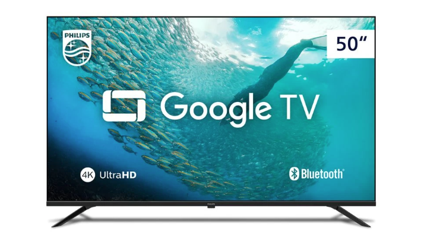

Smart TV Philips 50" UHD 4K

Marca: Philips
R$ 2.299,00
Sobre o produto:
A Smart TV Philips 50" UHD 4K oferece uma experiência imersiva com HDR10, Dolby Vision e Dolby Atmos para uma experiência cinematográfica em casa.
Smart TV LED 32" Philco Roku TV
Marca: Philco
R$ 999,00
Sobre o produto:
Eleve sua experiência de entretenimento com o sistema Roku TV e processador Quad Core, garantindo navegação ultraveloz aos serviços de streaming.
Smart TV Full HD AOC Roku TV 43"

Marca: AOC Roku
R$ 1.599,00
Sobre o produto:
Navegação fluida e acesso a milhares de aplicativos com a resolução Full HD e o sistema operacional Roku.
Smart TV 43" Full HD Samsung F6000F

Marca: Samsung
R$ 1.799,99
Sobre o produto:
Combina resolução nítida com o exclusivo Samsung Gaming Hub, permitindo acessar jogos via nuvem pelo Xbox Cloud Gaming.
Smart TV 4K Semp 50S62 LED Google TV

Marca: Semp
R$ 2.184,05
Sobre o produto:
Redefina sua experiência visual com a resolução 4K UHD, entregando quatro vezes mais detalhes para imagens realistas.
Smart TV 32" LG Full HD WebOS 26

Marca: LG
R$ 1.199,85
Sobre o produto:
Equipada com o moderno sistema operacional WebOS 26 de 2026, oferece navegação fluida e recursos práticos para o dia a dia.